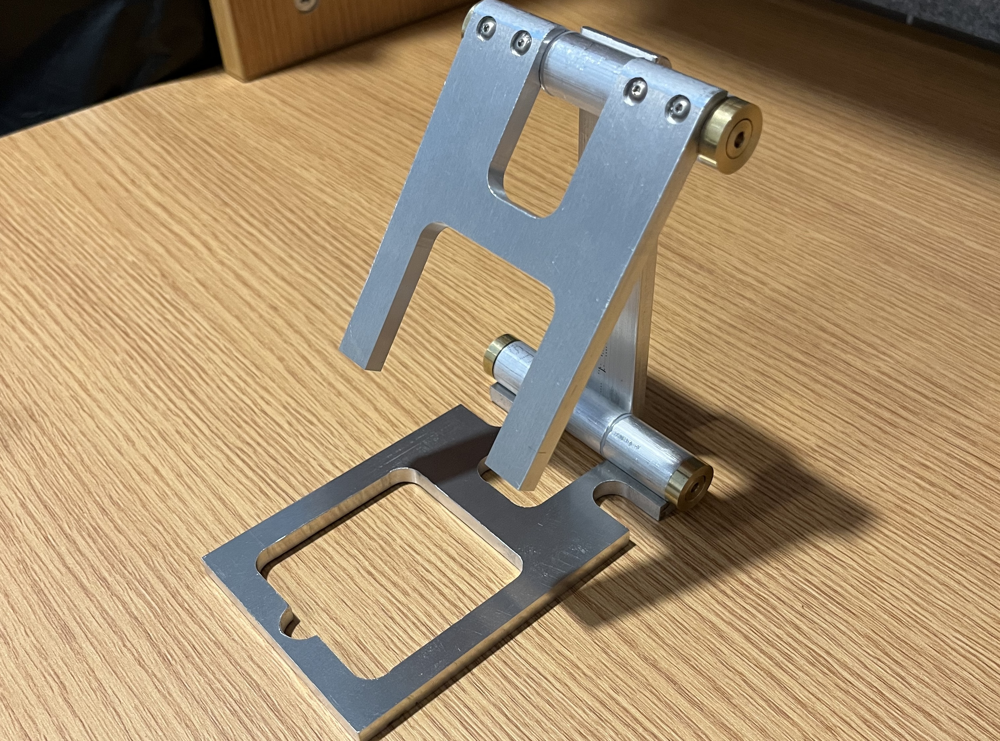

Phone Holder - Student Machine Shop (SMS) Course
Overview
The Department of Physics & Astronomy at UBC has a Student Machine Shop available to students to
work on personal projects. To gain access to the shop, students must complete the Student Machine
Shop Course, which teaches how to safely use various machine tools. To practice using the available
machines, students build a cell-phone holder.
To learn more about the SMS course, see: https://sms.phas.ubc.ca/
Course Learning Goals
- Safety rules and machine tool fundamentals
- Measuring, hand tools, drill press, tap and drill
- How to read technical drawings
- How to use the lathe, including techniques such as facing, turning, drilling a hole, and threading with die
- How to grind lathe tool bits for aluminum and brass
- How to use the milling machine, including techniques such as edge finding, side and face milling, automatic feed, and drilling
- How to use the waterjet cutter
Results
- Throughout the week of the course, I learned how to use several tools that were new to me (lathe, milling machine, drill press, hacksaw, bandsaw, tap and die, etc.)
- I had enough accuracy during machining that the pieces easily fit together when I assembled them
- I lacked time to complete the hooks (which hold the phone on the holder) but had completed enough of the project to prove my ability to safely use the machine tools allowing me to successfully pass the course and receive a certificate of completion